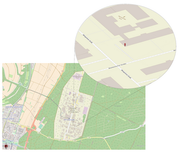
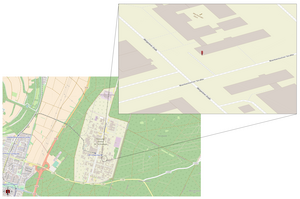

8.18.3.6 IfcMapConversion
8.18.3.6.1 Semantic definition
The map conversion deals with transforming the local engineering coordinate system, often called world coordinate system, into the coordinate reference system of the underlying map.
For this transformation, IfcMapConversion data are used for: 1. a scaling of the three axes (x,y,z), by the same IfcMapConversion.Scale 2. followed by an anti-clockwise rotation about the z-axis of θ, where:
$$ \theta=arctan\left(\frac{IfcMapConversion.XAxisOrdinate}{IfcMapConversion.XAxisAbscissa}\right) $$
- and then a translation in (x,y,z) of IfcMapConversion.Eastings, IfcMapConversion.Northings, IfcMapConversion.OrthogonalHeight
With IfcMapConversion, one scale is applied equally to x, y and z, to convert units. With IfcMapConversionScaled, additional different factors multiply x, y and z, to scale coordinates - not units.
8.18.3.6.2 Entity inheritance
8.18.3.6.3 Attributes
| # | Attribute | Type | Description |
|---|---|---|---|
| IfcCoordinateOperation (2) | |||
| 1 | SourceCRS | IfcCoordinateReferenceSystemSelect |
Source coordinate reference system for the operation. |
| 2 | TargetCRS | IfcCoordinateReferenceSystem |
Target coordinate reference system for the operation. |
| Click to show 2 hidden inherited attributes Click to hide 2 inherited attributes | |||
| IfcMapConversion (6) | |||
| 3 | Eastings | IfcLengthMeasure |
Specifies the location along the easting of the coordinate system of the target map coordinate reference system. |
| 4 | Northings | IfcLengthMeasure |
Specifies the location along the northing of the coordinate system of the target map coordinate reference system. |
| 5 | OrthogonalHeight | IfcLengthMeasure |
Orthogonal height relative to the vertical datum specified. |
| 6 | XAxisAbscissa | OPTIONAL IfcReal |
Specifies the value along the easting axis of the end point of a vector indicating the position of the local x axis of the engineering coordinate reference system. |
| 7 | XAxisOrdinate | OPTIONAL IfcReal |
Specifies the value along the northing axis of the end point of a vector indicating the position of the local x axis of the engineering coordinate reference system. XAxisAbscissa it provides the direction of the local x axis within the horizontal plane of the map coordinate system. |
| 8 | Scale | OPTIONAL IfcReal |
Scale to be used, when the units of the CRS are not identical to the units of the engineering coordinate system. If omitted, the value of 1.0 is assumed. |
8.18.3.6.4 Formal propositions
| Name | Description |
|---|---|
| TargetCRSOnlyProjected |
No description available. |
|
|
8.18.3.6.5 Examples
-

Figure 8.18.3.6.A -

Figure 8.18.3.6.B -

Figure 8.18.3.6.C
8.18.3.6.6 Formal representation
ENTITY IfcMapConversion
SUPERTYPE OF (ONEOF
(IfcMapConversionScaled))
SUBTYPE OF (IfcCoordinateOperation);
Eastings : IfcLengthMeasure;
Northings : IfcLengthMeasure;
OrthogonalHeight : IfcLengthMeasure;
XAxisAbscissa : OPTIONAL IfcReal;
XAxisOrdinate : OPTIONAL IfcReal;
Scale : OPTIONAL IfcReal;
WHERE
TargetCRSOnlyProjected : 'IFC4X3_ADD2.IFCPROJECTEDCRS' IN TYPEOF(SELF\IfcCoordinateOperation.TargetCRS);
END_ENTITY;